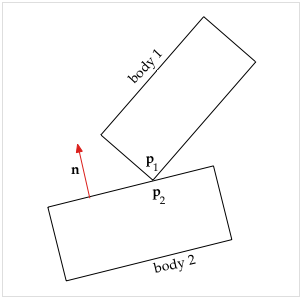
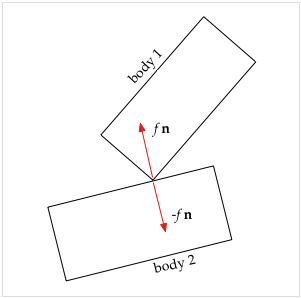
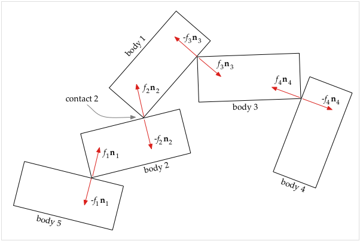
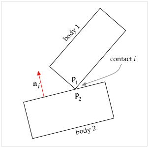
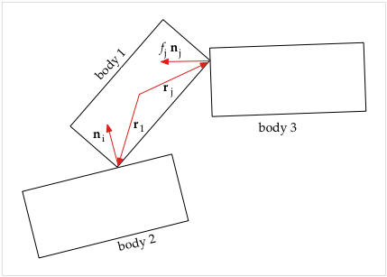

Esta simulación utiliza el Motor de Física de Cuerpo Rígido 2D para mostrar objetos chocando y empujando unos contra otros. Se basa en la simulación de Colisiones de Cuerpos Rígidos, pero se trata de fuerzas de contacto estables donde los objetos presionan contra el suelo, la pared o entre sí.
Haga clic cerca de un objeto para ejercer una fuerza de resorte con el mouse. Con el se teclado puede controlar cuatro "propulsores". Las teclas S,D,F,E controlan el empuje en el bloque 1. Él las teclas J, K, L, I, y también las teclas de flecha, controlan el empuje en el bloque 2. También se puede establecer la gravedad, la elasticidad (rebote) y la amortiguación (fricción). Se puede elegir de uno a seis objetos.
Also available are: open source code, and a simple-compiled version which is more customizable.
Try rearranging the blocks so they lean against each other at various angles, or stacking the blocks. You'll see that they are very slippery and hard to get to stack! This is because there is no contact friction in this simulation.
The contact forces are shown as red lines that appear at the corners of the objects. Contact forces come in pairs that are equal and opposite, but only one of each pair is shown here.
About friction and damping: In this simulation, the contacts between objects have no friction whatsoever, so they can slide against each other easily. The damping parameter that you can modify (you may have to click on the "show controls" button to see the damping parameter) has to do with the motion of the objects through the space -- damping makes it as though the objects are moving through a thick syrup, or that there is friction between the background surface and the objects.
It may surprise you that getting objects to rest on the floor is a very challenging problem!
It is because contact forces are tricky to figure out. Other forces are much simpler because they only depend on the position of one or two objects. For example, the force of a spring between two objects depends only on the position of the end points of the spring. But the contact forces between objects depends on all the other forces on the objects and how they rest against each other in a rather complex way.
The software (a class called ContactSim) described here for calculating contact forces works closely with software that handles collisions, see Rigid Body Collisions. That software (a superclass called ImpulseSim) takes care of collisions. As a result there should be no collisions occuring when the contact force code is active, because the collision code detects collisions, backs up in time to just before the collision and applies an appropriate impulse to cause the objects to bounce (it reverses their velocities). The superclass also calculates the effects of external forces acting on the objects such as gravity, thrust, spring, and damping. (Interestingly, it is those external forces that cause the contact forces: without them there would be no forces pushing objects into each other.)
The idea is to calculate the exact amount of force needed at each contact to
just barely prevent the objects from penetrating. These forces are calculated
in the evaluate method of the ContactSim class, which is
called repeatedly by the differential equation solver to find the accelerations of the
objects. The differential equation solver uses that information to advance the state of
the world through time. On entering this evaluate method we are given the
current positions and velocities of each object, which is required information for
figuring out where contact points are and the geometry of contact forces between
objects.
First we find all the resting contacts between objects. The criteria are: a corner must be very close to an edge and moving very slowly (in the direction perpendicular to the edge). Using these criteria, we assemble a list of contact points. For each contact, we store information such as: which are the two objects that are in contact, what is the normal (perpendicular vector) to the edge, where the point of contact is relative to each object, etc.
Consider the two objects in contact in the figure. The contact point on body 1 is the corner labeled p1 , the contact point on body 2 is on the edge and labeled p2 . Let d be the distance between the two points, so that d = |p1 − p2| . Let n be the normal vector pointing out from body 2 which is perpendicular to the edge. In the diagram below we see the two contact forces that develop at the contact point. There is a contact force f n which acts on body 1 at the point of contact to prevent it from penetrating into body 2. By Newton's 3rd law there is also an equal but opposite force −f n which acts on body 2 at the point of contact to prevent it from penetrating into body 1.
What we want to find are the (currently unknown) contact forces, such as f n , which will just barely keep the objects from accelerating into each other, counteracting all the other forces (such as gravity) that are tending to push the objects together.
We focus on the contact distance d , the gap between the points that are in contact. Because the objects are in contact, we have that d = 0 (within numerical tolerance). A value of d < 0 would indicate that the objects are interpenetrating. A value of d > 0 would indicate the objects are not in contact but separated by the distance d .
The rate of change of the contact distance is the velocity d' . Because the objects are in resting contact we have that d' = 0 (within numerical tolerance). This was one of the criteria for selecting the set of resting contact points. Note that the objects can be sliding against each other, because we only care about motion in the direction of the normal (perpendicular to the edge).
What we are most interested in is d'' , the acceleration of the gap. Without contact forces we will find that d'' < 0 for most of the contact points, meaning that without any contact force, the objects will fall into each other and interpenetrate.
What makes computing the contact forces somewhat tricky is that they are all interrelated. This is because you can have a complex arrangement of objects resting on each other. The solution involves finding a set of equations that captures exactly how each contact force affects each gap. Then we solve the equations to find forces that exactly set d'' = 0 at each contact point. Actually, we also allow d'' > 0 which means the objects are separating and therefore there is no contact force at that particular contact.
Once we have found the exact force at each contact that will preserve the resting contacts (keeping the objects from accelerating into each other) we then apply those forces to each object. This results in changes to the accelerations of the objects. We then return control to the differential equation solver which continues to evolve the simulation over time using those new accelerations. But now the accelerations are modified so that the objects will remain in resting contact as desired.
This software for calculating contact forces is called ContactSim; it
is a subclass of the ImpulseSim class which is described on the page about
Rigid Body Collisions.
The following builds on the explanations there.
The algorithms used here are based on two papers by David Baraff:
See also Reaction Force Pendulum which is a simpler example of calculating contact forces using the math shown on this page.
Assume that we have a set of n contacts in some particular (but arbitrary) order. Define the following variables:
Our goal is to set up and solve (subject to certain constraints) the matrix equation
| a = A f + b | (1) |
The matrix entry ai j tells how much di'' changes from a unit change in fj. If we do the matrix multiplication in equation (1) we see that the acceleration of the i-th contact distance is given by
| di'' = ai 1 f1 + ai 2 f2 +. . . + ai j fj + . . . + ai n fn + bi | (2) |
This says that the acceleration of the i -th contact distance is a function of the contact forces f1, f2,..., fn and the external forces in bi. We can figure out the ai j and bi (see below). The di'' need to come out zero or positive, because the objects can't accelerate into each other (they are rigid bodies that don't interpenetrate). So the only unknowns are the contact forces fi , and we can solve this system of simultaneous equations to find them.
To illustrate how the A matrix and the b vector are calculated, consider the figure above. We have 5 bodies which are in resting contact at 4 contact points and the resulting contact forces are shown. (Note that the normals ni are always perpendicular to an edge and by convention point out from the object; this determines which forces have minus signs). The contact points are numbered in accord with the contact forces, so that contact force f1 n1 is at contact 1, etc. Focusing on contact 2 (between bodies 1 and 2), from equation (2) we can write
| d2'' = a2,1 f1 + a2,2 f2 + a2,3 f3 + a2,4 f4 + b2 | (3) |
Consider what is affecting the acceleration of the contact distance d2''. Anything that accelerates body 1 or body 2 can affect d2''. Here is a list of these sources of acceleration of d2'' and where they wind up in equation (3).
I hope this gives you some idea of how the A matrix and the b vector are calculated. Complete details on these calculations are given below in the sections Calculating the A Matrix and Calculating the b Vector.
Once we have found the A matrix and b vector, we are ready to solve equation (1) for the unknown force magnitudes in the f vector, subject to the following 3 constraints:
| ai >= 0, fi >= 0, a · f = 0 | (4) |
The constraints in words are:
The paper Fast contact force computation for nonpenetrating rigid bodies. by David Baraff goes into full detail about how to solve equation (1) subject to the constraints (4). I'll give a quick description here of how the algorithm described in that paper works.
The algorithm begins by setting all the contact forces in f to zero. The basic idea is to add in one contact force at a time, adding just enough force to maintain the constraints, and readjusting the other forces as necessary. We ignore the contact points we haven't yet considered, gradually increasing the set of contact points that obey the constraints. Here is a very simplified sketch of how it works:
At each point we are solving a subset of the matrix equation (1) involving only those contact points that we have considered so far. By the final step we have added in all of the contact points and therefore have a complete solution of equation (1) which obeys the constraints of equation (4).
Now that we know the contact forces, the last step is to apply them to the bodies,
which gives the final set of body accelerations that the evaluate method
then returns to the differential equation solver. The geometry of where each contact
force is applied on each body comes into play here to determine how that contact force
affects the linear and angular acceleration of a given body. This process is very
similar to that described on the Rigid Body Collisions
web page for treatment of forces such as the
thrust force.
The differential equation solver then continues to evolve the simulation over time using those new accelerations. These accelerations have however been precisely calculated so that the bodies that are in resting contact remain in resting contact without interpenetrating.
Our goal here is to calculate the entries of the A matrix of equation (1). As described above, the i, j-th entry in the A matrix, ai j, specifies how the j-th contact force, fj, affects the acceleration of the i-th contact distance, di''.
For a particular contact point i , let the bodies be numbered 1 and 2, with body 2 specifying the normal vector ni pointing out from body 2 towards body 1 (as in the diagram above). Let p1 be the point on body 1 that is in contact with the point p2 on body 2. Let di be the distance between p1 and p2 . If we regard p1 and p2 as vectors from the origin to those points on bodies 1 and 2, then their difference (p1 − p2) is also a vector and we can write
| di = ni ⋅ (p1 − p2) | (5) |
because the dot product with the normal gives us the component of the vector (p1 − p2) in the direction of n . Note that di is therefore a scalar quantity. Keeping in mind that all of the variables in equation (5) are functions of time, we can take the derivative twice as follows:
di' = ni' ⋅ (p1 − p2) + ni ⋅ (p1' − p2')
di'' = ni'' ⋅ (p1 − p2) + 2 ni' ⋅ (p1' − p2')
+ ni ⋅ (p1'' − p2'')
Because this is a point of contact, we have that p1 − p2 = 0 so the above simplifies to
| di'' = ni ⋅ (p1'' − p2'') + 2 ni' ⋅ (p1' − p2') | (6) |
The second term, 2 ni' ⋅ (p1' − p2') , is velocity dependent (so you can immediately calculate it without knowing the forces involved), and is therefore part of bi . See Calculating the b Vector below. So the fj dependent part of equation (6) is just
| ni ⋅ (p1'' − p2''). | (7) |
A contact force fj nj only affects di'' if that contact force operates on body 1 or body 2. If that is not the case, we know that ai j = 0 . Assume now that fj nj affects body 1 or body 2. But keep in mind that fj nj may be a contact force that is not at the i -th contact point (see the earlier diagram of 5 bodies in contact for example). We can find ai j from the geometry of the situation as follows.
Let nj be the vector normal at the j -th contact point. Assume that the j -th contact involves body 1. Then the contact force is fj nj if the contact involves a corner of body 1 or −fj nj if the contact involves an edge of body 1. From the geometry we can calculate the effect of the force on body 1, and therefore on the acceleration of p1'' . If the contact involves body 2, then the effect is on p2'' . Then using equation (7) we will arrive at the contribution of fj nj to ai j .
Define the following additional variables:
Then p1 = x1 + r1 and, recognizing that all these variables are functions of time, we can take derivatives:
| p1' = x1' + r1' = v1 + ω1 × r1 | (7a) |
Here we used the knowledge that r1 is only changing by rotation at a rate of ω1 . An elementary bit of calculus then gives the result that r1' = ω1 × r1 where the × indicates vector cross product. Taking another derivative:
p1'' = v1' + ω1' × r1 + ω1 × r1'
| p1'' = v1' + ω1' × r1 + ω1 × (ω1 × r1) | (8) |
The term ω1 × (ω1 × r1) is velocity dependent, so it goes into the b vector. The fj dependent part of p1'' is therefore
| v1' + ω1' × r1 | (8a) |
Our task now is to find out how much a unit change in fj affects this.
Because v1' is the linear acceleration of body 1, we have by Newton's First Law
v1' = (total force on body 1) /m1
Therefore the fj dependent part of v1' is
fj nj /m1
Because we are working in 2D, we can write angular acceleration as
ω1' = τ1 / I1
where τ1 = torque on body 1, and I1 = rotational inertia of body 1 about the center of mass. (If you are working in 3D, angular acceleration has another term; see [Baraff-1] for more information). Suppose that the j -th contact occurs at the point pj , and the vector rj goes from center of mass of object 1 to pj . Then the force fj nj contributes a torque of rj × fj nj . So the fj dependent part of ω1' is
(rj × fj nj) / I1
and we can write equation (8a), the fj dependent part of p1'' , as
fj nj / m1 + (rj × fj nj) × r1 / I1
= fj (nj / m1 + (rj × nj) × r1 / I1)
and the fj dependent part of di'' in equation (6) is then
fj ni ⋅ (nj / m1 + (rj × nj) × r1 / I1)
Therefore, looking back at equation (2) for context, we have the dependence of di'' on fj as
| ni ⋅ (nj / m1 + (rj × nj) × r1 / I1) | (9) |
which goes into ai j .
Keep in mind that we assumed that fj nj affected body 1. If instead it is −fj nj affecting body 1, then that changes the sign of expression (9). If fj nj affects body 2 instead of body 1, then the effects are on p2'' in equation (6), so there is a sign change and also we use m2, r2 , and I2 in expression (9) and rj is computed relative to body 2. Also, in the case where fj nj is at a contact point between bodies 1 and 2, then fj nj affects body 1 and −fj nj affects body 2 and you wind up using expression (9) twice and putting the sum in ai j .
Here we calculate the b vector of equation (1). The b vector specifies what the contact distance acceleration di'' would be in the absence of contact forces. It depends on non-contact forces such as gravity, thrust, spring force, damping, etc., but also has a velocity dependent component.
Note that it is these forces that cause the contact forces to exist; the contact forces develop in reaction to the other forces that are pushing the objects together, so contact forces are also known as "reaction forces".
In the context of solving equation (1), the b vector is regarded as a "constant" vector, because at the moment in time that we are solving equation (1) for the contact forces, the b vector is a known quantity.
We continue with the same scenario and variables defined in the previous section Calculating the A Matrix. That is, we consider the i-th contact, and we number the bodies as 1 and 2, where body 2 determines the normal vector ni of the contact. We are seeking an expression for bi in equation (2). We start from equation (6) which was derived in the previous section:
di'' = ni ⋅ (p1'' − p2'') + 2 ni' ⋅ (p1' − p2')
We first consider the term 2 ni'⋅ (p1' - p2'). It is dependent only on current velocity, not acceleration, and so is independent of any contact forces being applied, and therefore belongs in the b vector. Recall ni is the normal of body 2. Therefore, if body 2 is stationary (a wall or floor for example) then its normal does not change, so ni' is the zero vector and this term is zero.
Recall that ni is the normal vector to body 2 in the scenario of the previous section. We know that body 2 is rotating with angular velocity ω2 . Therefore, by an elementary bit of calculus we can write
ni' = ω2 × ni
where we treat angular velocity as a vector ω2 perpendicular to the plane so that
ω2 = {0, 0, ω2}
Here is the derivation of that result: Let ni be defined as follows (because we are in 2D the z component is zero):
ni = {nix, niy, 0}
We know that the vector ni is rotating at a rate ω2 . Ignoring any acceleration, we could write the vector ni as a function of time like this:
ni = |ni| {cos(ω2 t), sin(ω2 t), 0}
Where |ni| is the magnitude of the vector ni , and t = time. The first derivative is then
ni' = |ni| {−ω2 sin(ω2 t), ω2 cos(ω2 t), 0}
which is equivalent to:
ni' = {−ω2 niy, ω2 nix, 0}
which can also be expressed as a cross product of the two vectors:
ni' = ω2 × ni
Now we can use that expression for ni' and equation (7a) which gives an expression for p1' (and similarly for p2' as well) to write that
| 2 ni' ⋅ (p1' − p2') = 2 (ω2 × ni) ⋅ (v1 + ω1 × r1 − (v2 + ω2 × r2)) | (10) |
The above expression is part of equation (6), and is added in to bi . But only in the case where body 2 is a moving object; if body 2 is stationary (a wall or floor for example), then ni' is zero.
Next consider the term ni ⋅ (p1'' − p2'') of equation (6). We need to include in bi the effect of any non-contact forces on the accelerations of the contact points p1 and p2 . We will start from equation (8) which was derived in the previous section:
p1'' = v1' + ω1' × r1 + ω1 × (ω1 × r1)
It turns out that the accelerations
v1'
and
ω1'
that are due to
non-contact forces have already been calculated for us by the earlier processes (see
evaluate method of ImpulseSim class). Those accelerations are
passed in to our evaluate method and so we simply plug them into equation
(8) to get
p1''
(and
p2''
has the similar expression). So we can write
this out as
| ni ⋅ (p1'' − p2'') = ni ⋅ (v1' + ω1' × r1 + ω1 × (ω1 × r1) − (v2' + ω2' × r2 + ω2 × (ω2 × r2))) | (11) |
which is part of equation (6) to be added in to bi . Keep in mind that in the above equation, v1' and ω1' are the accelerations of body 1 due only to non-contact forces (and similarly for v2' and ω2' ).
We now have in expressions (10) and (11), the contact-force-independent parts of equation (6) which is what goes into bi .
This web page was first published January 2007.